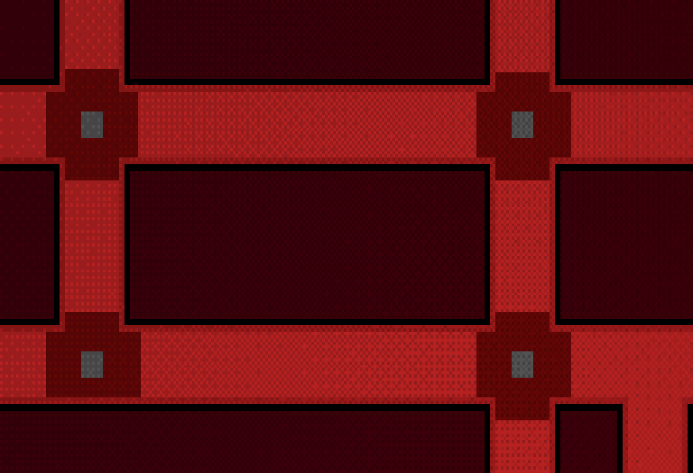

ROBERT (Over Radio): Okay so this planet is...
ROBERT (Over Radio): Okay so this planet is... BOBERT (Over Radio): Hephestus, temperatures here average around 3000° Kelvin, thankfully the metals that are able to solidify here are extremely heat resistant, the same ones present in most metals that WE useROBERT (Over Radio): Good thing you're not down there, you're tie might catch fire Bobert!Alrighty then, you should be getting the files for a plumber right about now, there's a malfunctioning factory that needs work, the steam release is not, well, releasing, so check on the valves.
BOBERT (Over Radio): Hephestus, temperatures here average around 3000° Kelvin, thankfully the metals that are able to solidify here are extremely heat resistant, the same ones present in most metals that WE useROBERT (Over Radio): Good thing you're not down there, you're tie might catch fire Bobert!Alrighty then, you should be getting the files for a plumber right about now, there's a malfunctioning factory that needs work, the steam release is not, well, releasing, so check on the valves.TUTORIAL: Click on each valve until the text above it says DONE, get all valves set to DONE in order to finish the minigame

Career Spotlight: Plumber, Pipefitter, Steamfitter
Plumbers Pipefitters and Steamfitters all have a similar job of dealing with pipes and their connected technologies
Plumber Tasks
- Manage Piping: Managing piping for pressure, both low and high
- Undergound Installation: Installation of underground pipes is common, and extending existing piping
- Catastrophic Failures: Plumbers need to be able to deal with certain systems breaking and being able to fix these sytsems
- Appliances: Installation and repair of appliances and their peripherals, including dishwashers, sinks, and toilets
- Estimate Time and Costs: Being able to provide an estimation for your services is important for consumer interaction
Education & Skills Needed
- Post-Secondary: Post-Secondary is often a requirement for work in the field
- Advanced Degrees: Advanced degrees are rarely required
- Skills: Being able to track precise movements, capability of planning out work
Work Environment
- Fieldwork: Most of plumbers work environment is out in a field
- Office Work: There still exists minimal office work, mostly processing client requests
Salary & Career Outlook
- Median Salary: Around $62,970 per year
- High Pay: Over $100,000 for veteran plumbers in the top 10%
- Job Growth: Fast growth is expected as more homes are made
✏️ Check Your Understanding
Test what you've learned about plumbing